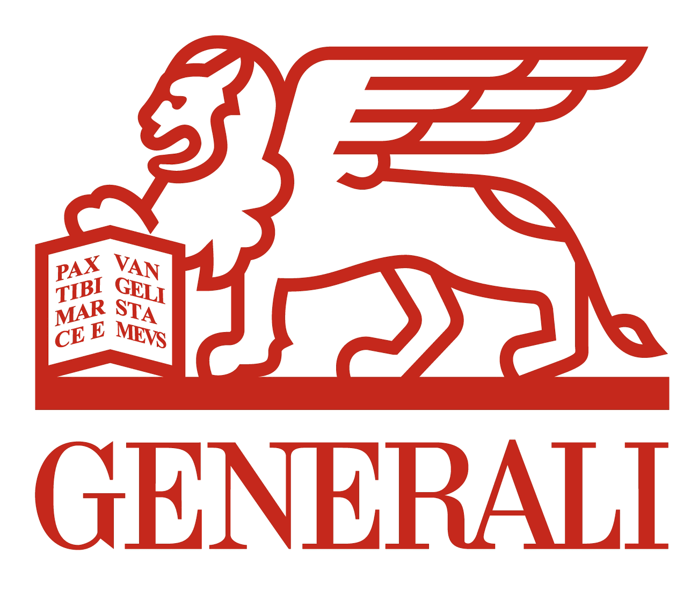

Recherche / Ateliers / Conception
Linkexpert
Une app interne pour mettre en relation les collaborateurs Generali
MISSION
Accompagner une cellule créative dans la conception d’un outil en interne de la phase de cadrage jusqu'à la définition d’un produit minimum viable
Développer rapidement un service simple, utile et innovant, avec une proposition de valeur approuvée par les collaborateurs et un ROI important
PROJET
2017, 2 mois
Ateliers chez le client, conception à l'agence
Equipe Directeur conseil/DA/Motion designer/Cellule créative Generali
CE QUE J'AI FAIT
Recueillir les besoins de la cellule
Prendre connaissance de la genèse du projet et échanger nos premières réflexions
Préparer et animer plusieurs ateliers : de la définition de la vision du service jusqu’à du live sketching
Poser les parcours généraux
Concevoir des wireframes
Travailler sur un motion design
Suivre la conception graphique en pair design
Ateliers
Cadrage = aligner les visions
Atelier.1 : démarrer et partager, préparer l'étude terrain
Atelier.2 : définir la vision du service
Atelier.3 : construire la proposition de valeur
Idéation = définir le cadre de l'expérience
Atelier.4 : identifier les fonctionnalités clés
Atelier.5 : storyboarder les cas d'usage
Atelier.6 : sketcher les interfaces de 3 écrans clés
Atelier.7 : présenter les wireframes finalisés
Focus group = valider le concept
Focus group 1&2 : valider le concept imaginé
Atelier.8 : restitution, analyse et échanges pour validation du concept
Atelier 3
Construire la proposition de valeur
L'outil est un :
Facilitateur interne de mise en relation entre collaborateurs
grâce à un système simple de matching
Matching entre une offre de compétence et une demande de service
D’un côté, il permet aux collaborateurs Generali qui le souhaitent :
- de pouvoir choisir de relever de nouveaux challenges
- avec n’importe quel autre collaborateurs
- dans n’importe quel service Generali
De l’autre, il permet aux collaborateurs Generali en manque de ressources :
- d'en trouver une en interne rapidement et facilement
- qui peut réaliser une mission ponctuelle sur un périmètre précis
Bénéfices
Business
Augmenter la productivité des équipes
Exploiter au mieux les temps “morts” des collaborateurs
RH
- Stimuler les profils les plus motivés
- Décloisonner les services
- Créer des synergies
- Faciliter l’identification de la bonne ressource sur la bonne mission
- Identifier de potentielles mobilités internes
- Augmenter le taux de rétention des profils les plus motivés
- Augmenter le taux d’emploi

Atelier 5
Storyboarder les cas d'usage
Déroulé de l'atelier :
Benchmark fonctionnel : présentation et échanges + « critères du matching »
Partager des idées autour des fonctionnalités et univers utilisés par d’autres services
Parmi ces exemples, identifier et sélectionner des fonctionnalités utiles à notre outil
Uses cases : passage en revue et discussion
Storyboarding : réalisation, votes, commentaires
Atelier 5


Conception
Home page
Une HP adaptée aux deux profils recruteur/candidat :
- Je peux à la fois proposer une mission mais aussi créer mon profil de candidat
- Une fois mon profil renseigné, je peux le modifier au besoin en me rendant dans mon espace perso
- Un fil d’actualité remonte toutes les missions en cours et celles terminées
Conception
Fiches candidat
Le recruteur peut consulter les fiches candidats poussées par le système
Dans une fiche :
- Nom, poste, localisation, motivation/baseline, compétences, appétences + disponibilité
Valeur ajoutée de la fiche :
- L’historique des participations et les évaluations laissées
Conception
Fonctionnement du matching
- Renseignements identiques côté recruteur et côté candidat
- Niveau de difficulté de la mission vs positionnement du candidat sur la plateforme
- Compétences souhaitées vs compétences possédées
- Profil recherché vs ma personnalité
- Créneau horaire souhaité vs ma disponibilité
Résultats
Projet validé en interne par le COMEX
Projet sponsorisé et en cours de développement (design sprint)